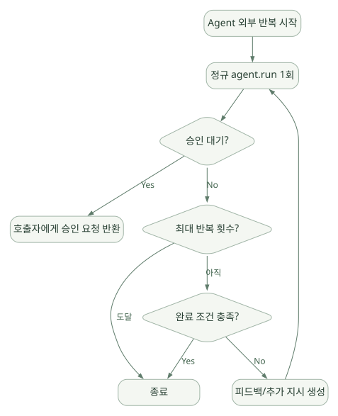

코드와 적용 / 단원 09
실행 계층을 고정 버전 소스와 연결하기
Agent·Session·Tool·외부 Loop·Workflow 복구
먼저 연결해 보기
이 단원은 원문이 지정한 python-1.24.0의 공개 파일과 클래스를 따라 읽는 가이드입니다. Agent의 계층과 Provider 전후 처리, Tool 반복과 Middleware, Workflow 복구 진입점을 앞 단원의 개념에 연결합니다.
발췌 시그니처와 의사코드는 실제 파일 전체를 복제한 구현이 아닙니다. 특히 도메인 인가를 표현한 함수가 SDK 내부 API라고 오해하지 않도록 원문의 설명과 고정 링크를 함께 확인하세요.
읽는 관점공개 코드에서 확인한 구조와 이해를 위해 재구성한 흐름을 구분하세요.
22. 코드 분석 범위와 저장소 레이아웃#
이 장의 파일 위치는
python-1.24.0태그를 기준으로 열어 확인한 고정 링크를 우선한다. GitHub의main브랜치는 분석 이후 바뀔 수 있으므로 함수와 구조를 비교할 때 사용하지 않는다.
22.1 저장소 구조#
microsoft/agent-framework
├── python/
│ ├── README.md
│ ├── pyproject.toml
│ ├── packages/
│ │ ├── core/
│ │ │ └── agent_framework/
│ │ │ ├── __init__.py
│ │ │ ├── __init__.pyi
│ │ │ ├── _agents.py
│ │ │ ├── _clients.py
│ │ │ ├── _types.py
│ │ │ ├── _tools.py
│ │ │ ├── _middleware.py
│ │ │ ├── _sessions.py
│ │ │ ├── _mcp.py
│ │ │ ├── _skills.py
│ │ │ ├── _workflows/
│ │ │ │ └── _workflow.py
│ │ │ ├── _harness/
│ │ │ │ └── _loop.py
│ │ │ └── security.py
│ │ └── <integration-packages>/
│ └── samples/
└── dotnet/주: 위 트리는 주요 분석 파일을 추려 만든 축약본이며, 실제 디렉터리 전체를 열거한 것은 아니다. 기본 구조는 릴리스 고정 AGENTS.md에서 확인할 수 있다. [S01]
22.2 읽는 순서 추천#
| 순서 | 모듈 | 집중할 질문 |
|---|---|---|
| 1 | _agents.py |
Agent, RawAgent, BaseAgent 간 역할은? |
| 2 | _sessions.py |
Session 상태가 어떻게 직렬화되고 Provider에 전달되는가? |
| 3 | _clients.py |
모델 요청과 ChatClient 계층은 어떻게 분리되는가? |
| 4 | _tools.py |
함수 Tool의 스키마·인자 검증·실행은 어디서 일어나는가? |
| 5 | _middleware.py |
Agent/Chat/Function 정책 개입은 어디서 일어나는가? |
| 6 | _workflows/_workflow.py |
Graph 실행과 Checkpoint의 주요 진입점은? |
| 7 | _harness/_loop.py |
Agent 전체를 왜, 언제 다시 실행하는가? |
| 8 | _skills.py / _mcp.py |
외부 기능을 어떻게 검색·노출·호출하는가? |
| 9 | security.py |
보안 정책 구현은 어떻게 결합하는가? |
22.3 실제 소스 링크#
- [S01] Core 개발 가이드: AGENTS.md — 고정 버전
- [S02] Agent 구현:
_agents.py - [S03] Tool 정의와 호출:
_tools.py - [S04] Middleware:
_middleware.py - [S05] ChatClient:
_clients.py - [S06] Session/Provider:
_sessions.py - [S07] AgentLoopMiddleware:
_harness/_loop.py - [S08] Workflow 실행:
_workflows/_workflow.py - [S09] 고정 릴리스 Core 내부 설명: AGENTS.md 관련 섹션
- [S10] Core README: 패키지 설명
23. 코드 레벨 ① — Agent의 계층 구조#
고정 버전의 _agents.py에서는 다음 구조를 확인할 수 있다. [S02]
SupportsAgentRun: 공통run()시그니처와 Session 관련 인터페이스를 기술하는Protocol.BaseAgent: 식별자, Provider 등 공통 기반 추상화. 직접 실행 가능한 구체 Agent가 아님.RawAgent: ChatClient를 이용한 실제 핵심 Agent 실행을 구현하는 계층. 미들웨어·Telemetry를 자체적으로 둘러싼 완전체와 구분.Agent: 공개 사용 API로 표준 Middleware 및 Telemetry 계층을 포함한다.
여기서 Protocol은 Java의 인터페이스처럼 특정 명시적 상속만 허용하는 방식이 아니다. 필요한 메서드를 구현하면 구조적 타입 호환이 가능하다.
23.1 핵심 호출 시그니처#
공개 코드의 SupportsAgentRun.run() 선언에서는 주요 옵션으로 아래를 확인한다.
# 소스 시그니처를 학습을 위해 발췌·단순화한 것
run(
messages=None,
*,
stream=False,
session=None,
function_invocation_kwargs=None,
client_kwargs=None,
)| 매개변수 | 의미 | 사용 시 판단 |
|---|---|---|
messages |
모델에 전달할 입력 | 문자열, 메시지 구조 등 타입 |
stream |
점진적 출력 여부 | UI/중단·취소 처리 |
session |
실행 간 상태 공유 | 사용자/tenant 소유권 |
function_invocation_kwargs |
Tool 실행 시 런타임 전달 값 | Model-supplied 인자와 분리·검증 |
client_kwargs |
모델 클라이언트별 설정 | Provider 독립성이 깨지는 지점 |
개발 관점: '모델이 제공한 인자'와 '서버에서 신뢰하여 전달하는 런타임 인자'는 다르게 취급해야 한다. 실제 Tool 호출에서는 명칭 충돌과 전달 범위를 검사한다.
23.2 리소스 생명주기#
고정 버전의 RawAgent.open()/close() 및 상속 구조는 모델 클라이언트와 MCP 연결의 초기화·정리를 담당한다. async with agent:도 사용 가능하다. [D03][S01]
async with agent:
answer = await agent.run("안녕하세요")장시간 살아 있는 Agent 인스턴스가 닫힌 클라이언트를 다시 재사용하지 않는지, 사용자 간 상태가 공유되지 않는지, 비정상 예외 시 리소스가 정리되는지도 실험 시 확인한다.
24. 코드 레벨 ② — Context Provider와 Session 저장#
24.1 핵심 클래스#
고정 버전 _sessions.py에서 ContextProvider, HistoryProvider, SessionContext 및 세션 직렬화 구조를 확인한다. [S06]
예를 들어 ContextProvider의 실행 전/후 확장 지점은 다음과 같은 모양이다.
# 개념만 보여 주는 API 발췌 (실제 매개변수 세부사항은 소스 확인)
class ContextProvider:
async def before_run(self, *, agent, session, context, state):
...
async def after_run(self, *, agent, session, context, state):
...실제 흐름
Agent.run(session)
→ Provider별 state 확보 (세션에 종속)
→ before_run(session, context, state)
→ History와 추가 Context를 모델 요청에 반영
→ ChatClient 및 Tools 실행
→ after_run(session, context, state)
→ 세션 상태 직렬화·저장(별도 설계)24.2 세션 직렬화의 실제 포인트#
고정 버전 소스에는 세션 상태의 값이 JSON 친화적인 형태인지 검사하고, 사용자 지정 클래스는 register_state_type() 등의 등록 경로로 처리하는 메커니즘이 존재한다. AgentSession.state에 임의의 Python 객체를 넣기만 하면 모든 저장소에서 영구 복원되는 것이 아니다. [S06]
따라서:
- Python의 파일 핸들·DB 커넥션을 Session에 직접 저장하지 말 것.
- 도메인 상태는 JSON 직렬화 가능한 값·등록된 타입으로 분리할 것.
- 직렬화와 복원 후 동등성을 테스트할 것.
- 저장 포맷 스키마 버전 및 마이그레이션 정책을 둘 것.
- 사용자/tenant ID는 인증된 서버 컨텍스트에서 부여할 것.
25. 코드 레벨 ③ — Tool Loop와 Middleware#
25.1 FunctionTool 스키마·호출#
_tools.py의 FunctionTool은 Python 함수를 Tool 객체로 감싼다. 소스 설명상 입력 스키마 생성 및 검증을 지원하지만, 원격 모델이 제시한 모든 입력을 신뢰 가능한 인가 요청으로 간주해서는 안 된다. [S03]
# 실제 소스의 구조를 간소화한 의사코드
async def invoke_tool(call, registered_tools, auth_ctx):
tool = resolve_registered_tool(call.name)
parsed = validate_schema(call.arguments, tool.schema)
authorize_tool_call(auth_ctx, tool.name, parsed) # 앱이 강화해야 할 경계
result = await tool.invoke(parsed)
return serialize_tool_result(result)이 의사코드에서 authorize_tool_call은 프레임워크 내부에 해당 이름의 함수가 있다는 뜻이 아니라, 개발자가 보장해야 하는 인가 단계를 명시한 것이다.
25.2 모델 호출과 반복#
고정 버전 Core AGENTS.md는 use_function_invocation() 등을 Tool 자동 반복에 연관된 API로 명시한다. 전체 프레임워크의 공식 Pipeline 문서도 FunctionInvocation을 ChatClient 계층에 둔다. [S01][D06]
# 이해용 의사코드: 실제 내부 while 구현 복제 아님
async def function_invocation_loop(messages, tools):
for _ in range(max_tool_rounds):
result = await call_llm(messages, tool_schemas(tools))
if not result.requests_local_tool_calls:
return result
for call in result.local_tool_calls:
tool_result = await run_local_tool_with_middleware(call)
messages.append(tool_result)
raise RuntimeError("tool round limit reached")알아둘 점: Hosted Tool이나 서버가 자체 실행을 맡는 Tool은 같은 로컬 함수 경로로 실행되지 않을 수 있다. 보안·계측·승인 적용 영역을 공급자별로 확인해야 한다.
25.3 AgentMiddleware.process#
_middleware.py의 AgentMiddleware는 Agent 호출 전후를 가로챈다. 중요한 진입점은 process(context, call_next) 형태다. [S04]
# 공식 소스의 인터페이스 패턴에 가까운 예시
class TenancyMiddleware(AgentMiddleware):
async def process(self, context: AgentContext, call_next) -> None:
# 1) 여기서 인증 컨텍스트를 검사할 수 있다.
# 2) 실제 서버 API에서는 별도 인증 계층이 선행되어야 한다.
await call_next()
# 3) 감사 데이터를 기록할 수 있다.정책 설계: 감사 로그와 실행 허용 여부를 하나의 단일 프롬프트에만 맡기지 않는다.
26. 코드 레벨 ④ — AgentLoopMiddleware#
고정 소스 _harness/_loop.py에 AgentLoopMiddleware 클래스가 존재하고, 소스 docstring은 should_continue 함수가 참인 동안 Agent를 다시 호출한다고 설명한다. Judge 기반 반복을 지원하는 with_judge(...) 경로, 반복 횟수·피드백 등의 옵션이 있다. [S07]
다음은 소스 개념을 반영한 재구성된 흐름이다.
넓은 도식은 가로로 이동하며 읽을 수 있습니다. 도식 크게 보기 ↗

원문에 수록된 학습용 도식입니다. 노드·화살표·분기 라벨을 보존해 다시 배치했습니다. 세부 조건과 예시·구현의 구분은 앞뒤 본문을 함께 읽으세요.
도식 원문 보기 (Mermaid)
flowchart TD
IN[Agent 외부 반복 시작] --> RUN[정규 agent.run 1회]
RUN --> APPROVAL{승인 대기?}
APPROVAL -->|Yes| STOP[호출자에게 승인 요청 반환]
APPROVAL -->|No| LIMIT{최대 반복 횟수?}
LIMIT -->|도달| END[종료]
LIMIT -->|아직| EVAL{완료 조건 충족?}
EVAL -->|Yes| END
EVAL -->|No| FEEDBACK[피드백/추가 지시 생성]
FEEDBACK --> RUN중요한 판단: 완료 조건으로 '모든 Todo가 끝났는가'를 사용할 수 있지만, 이것이 정답 정확도나 데이터 무결성을 보장하지는 않는다. 정량 결과 검증은 외부 코드 테스트·전문가 검토와 분리한다.
27. 코드 레벨 ⑤ — Workflow 실행 및 복구#
_workflows/_workflow.py에 Workflow 구현이 존재한다. 고정 소스의 클래스 설명은 Executor 그래프를 Pregel-like Superstep으로 실행한다고 명시한다. [S08]
이 파일에서 확인할 주요 지점:
Workflow: 실행 가능한 그래프 모델.run(...): Streaming/Non-Streaming 선택 및 최초 실행·응답·Checkpoint 복원의 진입점._execute_with_message_or_checkpoint(...): 새 입력 또는 복구 위치를 처리하는 경로._run_workflow_with_tracing(...): Workflow 실행과 텔레메트리를 연결하는 부분.- Executor의 입력 타입 검사 및 시작 메시지 전파.
- 최초 Entry Checkpoint 생성과 이후 Superstep 저장.
# 실제 메서드 관계를 설명한 의사코드
async def run_workflow(message=None, checkpoint_id=None, responses=None):
if checkpoint_id:
await restore_checkpoint(checkpoint_id)
elif message is not None:
await validate_start_executor_input(message)
await queue_initial_message(message)
await save_entry_checkpoint()
if responses:
await resolve_pending_requests(responses)
while has_runnable_executors():
await execute_next_superstep()
await save_checkpoint_if_enabled()
return collect_workflow_outputs()위 함수·조건은 개념용이다. 실제 run 시그니처와 부작용 순서는 제공자·실행 모드에 따라 다를 수 있다. [S08]
27.1 왜 Source 수준의 검증이 중요한가?#
- 어떤 시점에서 Checkpoint를 쓰는지에 따라 외부 Tool 중복 실행 위험이 달라진다.
- Streaming API에서 사용자에게 이미 보낸 문장을 되돌릴 수 있는지 여부가 달라진다.
- 승인 재개 시 Pending Request ID를 어디서 읽는지 알아야 한다.
- '오류 발생 시 자동 복구'라고 추상적으로 표현하는 것은 불충분하다.
27.2 소스코드 읽기 실습 순서#
Workflow.run()의 파라미터에서message,checkpoint_id,responses를 찾는다.- 신규 실행과 복구 실행이 어디서 분기하는지 확인한다.
- Superstep을 실제 수행하는 내부 Runner로 이동한다.
- Checkpoint 생성 조건을 찾는다.
- 요청·승인 이벤트를 저장하고 재발행하는 코드를 따라간다.
- 테스트 코드에서 동일 데이터 입력 시 재실행 횟수를 관찰한다.
직접 코드 실행 및 디버거 추적은 수행하지 않았다. 이 문서는 확인한 파일·클래스 구조와 공식 문서에 근거한 분석 가이드를 제공한다.